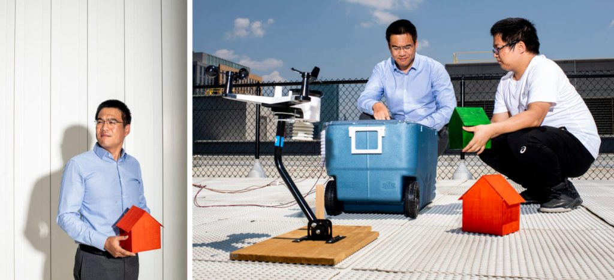

အထူးသဖြင့် ကလေးငယ် တွေနဲ့ သက်ကြီးရွယ်အိုတွေ အတွက် ရာသီ ပူချိန်မှာ အဲကွန်း ဟာ အပူရှပ်ခြင်း (Heat Stroke) ကနေ အကာအကွယ် ပေးနိုင်တာမို့ ကျန်းမာရေး အတွက် အထောက်အကူ ဖြစ်စေပါတယ်။
ဒါပေမယ့် အဲကွန်း တစ်လုံးရဲ့ ကုန်ကျစားရိတ်က မနည်းပါဘူး။ ဆင်ဖိုးထက် ချွန်းဖိုးပိုကြီး ဆိုသလို အဲကွန်း တပ်ဆင်ခထက် သူ့ကို ဖွင့်ဖို့ သုံးစွဲရတဲ့ လျှပ်စစ်ဓါတ်အားခက ရေရှည်မှာ ပိုများ နေပါတယ်။
ဒါ့အပြင် မြန်မာပြည်လို နွေရာသီမှာ မီး ခနခန ပျက်တဲ့ တိုင်းပြည်အဖို့ အဲကွန်း တပ်ထားပြီး ဖွင့်မရတဲ့ ဒုက္ခကလဲ ရှိပါသေးတယ်။
ဒီလို အဲကွန်း လေအေးပေးစက် မလိုပဲ အခန်းတွင်း အေးစေမယ့် အမိုးပြား တစ်မျိုးကို ပညာရှင်တွေ တီထွင် အောင်မြင် ထားပါတယ်။
ဒီ အမိုးပြားဟာ နေကလာတဲ့ အလင်းကို ရောင်ပြန် ဟပ်ပေးခြင်း အားဖြင့် အိမ်တွေးကို နေက အပူချိန် မဝင်အောင် အကာအကွယ် ပေးမှာ ဖြစ်ပါတယ်။ ဒါ့အပြင် အိမ်တွင်းက အပူကိုလဲ စုပ်ပူခြင်း အားဖြင့် အိမ်တွင်းမှာ အေးမြ နေစေမှာ ဖြစ်ပါတယ်။
ဒီ့ထက် ကောင်းတဲ့ အချက်ကတော့ ဒီ အမိုးပြားကို ပြန်လည် recycle လုပ်ထားတဲ့ စက္ကူကနေ ထုတ်လုပ် ထားတာပဲ ဖြစ်ပါတယ်။
အမေရိကန် ပြည်ထောင်စု Northeastern University က ပါမောက္ခ ရီဇန်း (Yi Zheng) နဲ့ အဖွဲ့ဟာ ဒီ အမိုးပြားကို တီထွင် နိုင်ခဲ့ကြတာ ဖြစ်ပါတယ်။ သူဟာ mechanical and industrial engineering ဌာနမှာ တွဲဖက် ပါမောက္ခ တစ်ဦး ဖြစ်ပါတယ်။
ဒီ အမိုးပြားကို အိမ်ခေါင်မိုး အောက်ခံ၊ မျက်နှာကျက် တွေအပြင် အိမ်နံရံ တွေမှာပါ ကပ်ပြီး သုံးစွဲနိုင်မှာ ဖြစ်ပါတယ်။ သူက တချိန်မှာ လူတွေဟာ သူတို့ရဲ့ အိမ်တွေကို ဒီ အအေးပေး စက္ကူ တွေနဲ့ ကာကြလိမ့်မယ်လို့ မျှော်လင့်ကြောင်း ပြောပြပါတယ်။

ဒီ အအေးပေး စာရွက်ဟာ အိမ်ခန်း အပူချိန်ကို ၁၀ ဒီဂရီ ဖာရင်ဟိုက် လောက်ထိ လျှော့ချ ပေးနိုင်မှာ ဖြစ်ပါတယ်။ ဒါဟာ အဲကွန်းလောက် အေးမြမှုကို မပေးနိုင် ပေမယ့် ပူပြင်းတဲ့ ရာသီမှာ အတော်လေး နေသာထိုင်သာ ရှိတဲ့ အပူချိန် ကို ပေးစွမ်းနိုင်မှာ ဖြစ်ပါတယ်။
ဒါဆို ဒီ အအေးပေး စာရွက်ကို ဘယ်လို လုပ်ထားသလဲ။ ပါမောက္ခ ဇန် ရဲ့ နည်းလမ်းက သိပ်တော့ ခက်ခဲလှတာ မဟုတ်ပါဘူး။
ပုံမှန် စာရွက် ပြုလုပ်ရာမှာ ပျော့ဖတ်ကို ကျိတ်ပြီး ဖိစက်နဲ့ ဖိ အပူပေး အခြောက်ခံပြီး စာရွက် ပြုလုပ်တာ ဖြစ်ပါတယ်။ ဒါပေမယ့် ပါမောက္ခ ဇန် က ဒီလို စာရွက် ပြုလုပ်ရာမှာ တက်ဖလွန် (Teflon) ပြုလုပ်ရာမှာ အသုံးပြုတဲ့ သဘာဝ ကုန်ကြမ်းနဲ့ ရောပြီး ပြုလုပ် ပါတယ်။
ဒီလို တက်ဖလွန် နဲ့ ရောလိုက်တဲ့ အတွက် ထွက်လာတဲ့ စာရွက်မှာ သာမန် မျက်စေ့နဲ့ မမြင်နိုင်တဲ့ လှိုဏ်ခေါင်းပေါက် လေးတွေ အများအပြား ဖြစ်ပေါ် လာပါတယ်။ ဒီ လှိုဏ်ခေါင်းပေါက် လေးတွေက အပူကို စုပ်ယူပြီး အိမ်ပြင်ပကို ပြန်လည် စွန့်ထုတ် ပေးမှာ ဖြစ်ပါတယ်။
ဒီ အအေးပေး စာရွက်ပြားကို သူ့ချည်း ကပ်ပြီး အသုံးပြု နိုင်သလို အဲကွန်းနဲ့ တွဲဖက်ပြီး အသုံးပြုမယ် ဆိုရင်လဲ အဲကွန်းရဲ့ ဓါတ်အား ကုန်ကျစားရိတ်ကို အများအပြား သက်သာစေမှာ ဖြစ်ပါတယ်။
ပါမောက္ခ ဇန်ဟာ သူ့ရဲ့ cooling paper တီထွင်မှုကြောင့် အမေရီကန် ပြည်ထောင်စု National Science Foundation ရဲ့ ဆုချီးမြှင့်ခြင်း ခံရကြောင်းလဲ သိရပါတယ်။
Ref: Goodbye AC: This new roofing material keeps houses cool | Free Think